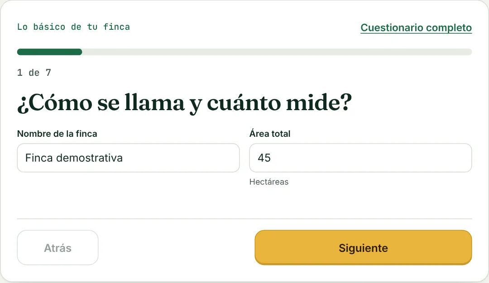
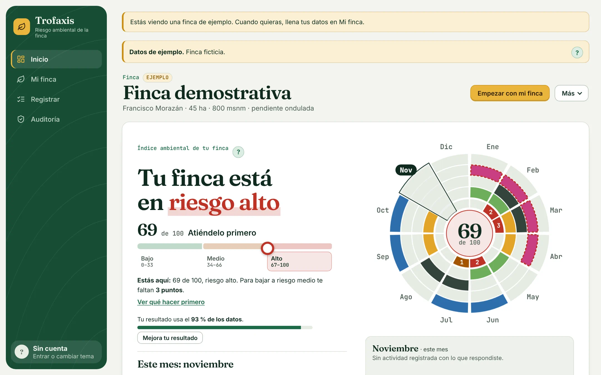
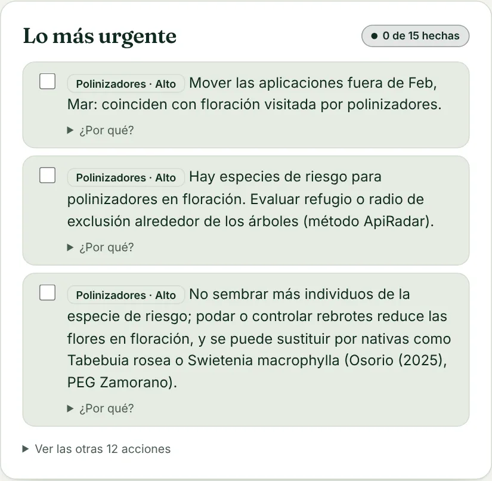
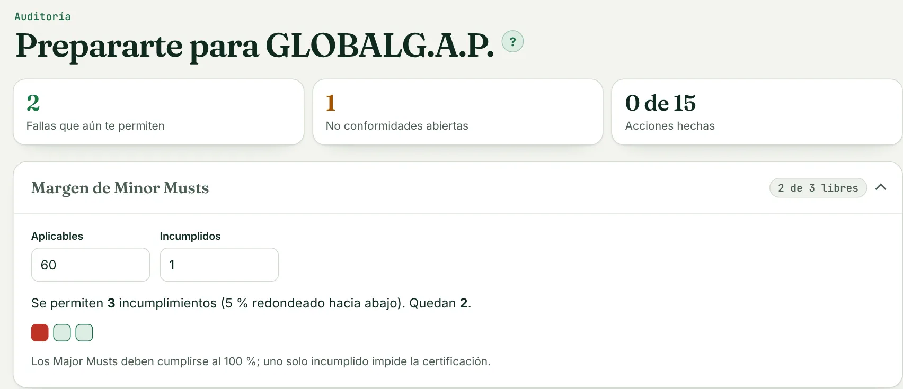

¿Tus aplicaciones caen en meses de floración?
Trofaxis cruza los meses en que aplicas con los meses en que florecen las plantas que visitan las abejas, y calcula el cociente de peligro de cada ingrediente activo con su DL50 por contacto.
Trofaxis
Armando la rueda del año
Trofaxis cruza tus cultivos, tus aplicaciones, tu riego y el clima de tu ubicación, y te muestra mes a mes dónde chocan con los polinizadores, el agua y el suelo. Alineado a GLOBALG.A.P. IFA v6.
¿Ya tienes cuenta? Inicia sesión. ¿Solo quieres mirar? Abre la finca de ejemplo.
Cada cálculo dice de dónde sale
Cada tema responde una pregunta concreta sobre tu finca y dice qué sección de IFA v6 toca. Lo que pasa en uno cambia la lectura del otro: una aplicación en mes de floración pesa distinto que la misma aplicación en mes seco.
Trofaxis cruza los meses en que aplicas con los meses en que florecen las plantas que visitan las abejas, y calcula el cociente de peligro de cada ingrediente activo con su DL50 por contacto.
Carga tu diseño de riego y Trofaxis lo revisa contra FAO-56: coeficientes de cultivo, etapas y profundidad de raíces. También cuenta la cercanía de la finca a quebradas y otros cuerpos de agua.
Con tu plan de fertilización, Trofaxis compara lo aplicado con el objetivo del cultivo y revisa el fraccionamiento, el método y los kilos de nitrógeno que caen en meses de lluvia fuerte.
La labranza, la pendiente y los meses de suelo descubierto se cruzan con los meses de lluvia fuerte. Donde coinciden, Trofaxis marca el mes.
Trofaxis señala los productos de amplio espectro que se aplican con la plaga presente y las aplicaciones en mes de cosecha, y recuerda verificar el intervalo de seguridad de la etiqueta.
No hace falta un consultor para empezar. Si tienes a mano lo que sembraste, lo que aplicaste y cómo riegas, ya tienes con qué.
Siete pantallas con lo mínimo: tu finca, tu cultivo, tu riego, tus aplicaciones y las abejas y árboles de tu entorno. Si prefieres mirar antes, abre la finca de ejemplo.

El índice resume tu riesgo de 0 a 100. La rueda muestra en qué meses se cruzan la lluvia, la floración, las aplicaciones y la cosecha, y cuáles de esos cruces son un riesgo.

Trofaxis ordena las acciones por urgencia y explica el porqué de cada una. En «Auditoría» lleva la cuenta de tus no conformidades y de tu margen de Minor Musts.


Cada anillo es algo que pasa en la finca. Donde dos anillos se encuentran en el mismo mes, puede haber un riesgo, y Trofaxis lo cuenta al centro.
Toca un mes
Es la finca demostrativa: sus datos son ficticios y se calculan con el mismo motor que usa la app. Ábrela en Trofaxis.
Trofaxis no inventa umbrales. Cada valor lleva su referencia, y lo que todavía es criterio del equipo aparece marcado como «criterio propio» hasta que se calibre con fincas reales.
El sistema de goteo fue el que utilizó la menor cantidad de agua durante el ciclo usando un total de 9,075 m³/ha que es un 59% menos de agua utilizada que el sistema de riego por inundación, y un 31% menos que el sistema de riego por aspersión.
El movimiento del agua a través del perfil del suelo es el factor que causa mayor lixiviación
manejar los árboles mediante podas o control de rebrotes, lo cual ayudaría a reducir significativamente la cantidad de flores durante la época de floración.
Trofaxis se instala desde el navegador, sin tienda de aplicaciones. Queda con su propio ícono y su propia ventana, y abre aunque en el campo no haya señal. El clima, el mapa y el NDVI sí necesitan conexión.
En Chrome y Edge es un clic. En iPhone y iPad, dos toques desde el botón Compartir.
Trofaxis está en etapa piloto. Hoy se usa completa y sin costo; los planes de pago todavía no están definidos.
Sin costo durante el piloto
Por definir
Los planes de pago y sus precios aún no están definidos. Si trabajas con varias fincas o quieres sumar la tuya al piloto, escríbenos y lo vemos contigo.
No. Trofaxis te ayuda a prepararte: ordena tus riesgos ambientales según las secciones de IFA v6 y te muestra qué atender primero. La certificación la decide el organismo de certificación. Trofaxis no está afiliada ni avalada por GLOBALG.A.P.
En tu equipo. Sin iniciar sesión, los datos de tu finca no salen de tu navegador; solo se consultan el clima y el mapa de tu zona. Si inicias sesión, tu finca también se guarda en la nube para abrirla desde otros equipos. El detalle está en la política de privacidad.
Sí. Después de abrirla una vez con conexión, la app instalada abre y calcula sin señal. El clima de tu ubicación, la imagen satelital del mapa y el NDVI de los lotes necesitan conexión.
Es un prototipo. Los pesos y algunos umbrales todavía están por calibrar con fincas reales y aparecen marcados como «criterio propio». Úsalo para ordenar prioridades y revisar tu manejo, no como un dictamen.
No. Puedes seguir sin cuenta y todo se guarda en tu navegador. Con una cuenta (Google o un enlace de un solo uso a tu correo) tu finca se guarda en la nube. No hay contraseñas.
Hoy, nada: está en etapa piloto. Los planes de pago aún no están definidos y se anunciarán en esta página.
En Windows, Mac y Linux con Chrome o Edge, en Mac con Safari, y en teléfonos y tabletas Android y iPhone. Firefox para computadora no instala aplicaciones web, pero puedes usar Trofaxis ahí como una página normal.